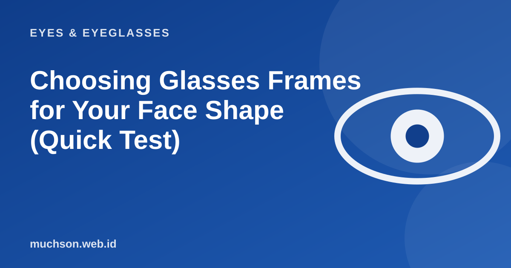

Home › Articles › Eyes & Eyeglasses
Eyes & EyeglassesChoosing Glasses Frames for Your Face Shape (Quick Test)
A frame that looks great on someone else will not necessarily look great on you. A simple pattern helps: a frame shape that contrasts with your face shape tends to look balanced. The short test below gives you a starting point, and you should still try them on before buying.

Quick face shape test
Text description of the diagram
Horizontal axis: Strong jawline. Vertical axis: Longer face.
- Top left: Oval / long: Aviator, square, wide frames
- Top right: Square: Round or oval
- Bottom left: Round: Rectangular or angular
- Bottom right: Heart: Light frames, wider at the bottom
Besides shape, look at this
- Size: the frame is not wider than your face and does not cover your eyebrows completely.
- Nose bridge: the frame should not leave marks or slide down when you look down.
- Colour: warm colours (brown, gold) suit warm skin; black, grey and blue suit fair and cool skin. Try them if you are unsure.
- Weight and material: if you wear them all day, light matters more than looks.
- Lens height: progressive lenses need enough lens height. Ask the optical shop.
Practical tip
The easiest way to avoid choosing wrong: try them on in a shop, or buy online from a shop that offers advice and gives the full sizes (lens width, bridge, temple).
FAQ
Does face shape really decide?
Only as a first guide. Size, proportion and personal taste matter just as much. Try several models and pick the one that feels comfortable.
Which frame is safest for a beginner?
A rectangle or a medium round frame in a medium size, in a neutral colour such as black, dark brown or clear.
What if my minus is high?
Choose a smaller frame in a round or oval shape, and consider a thinner lens so the edges do not look thick.